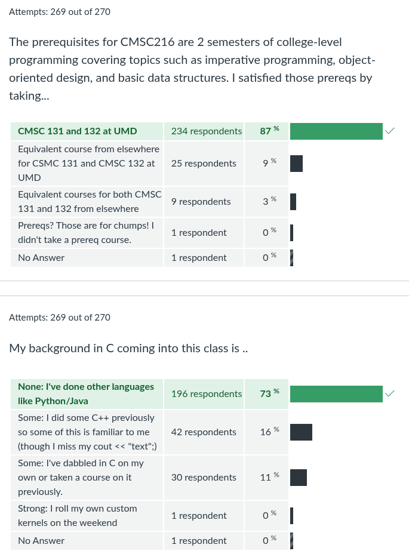
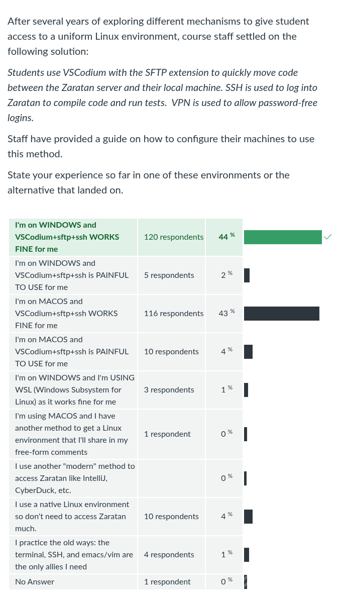
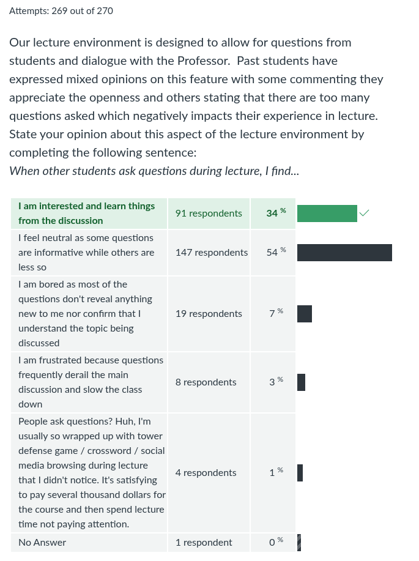
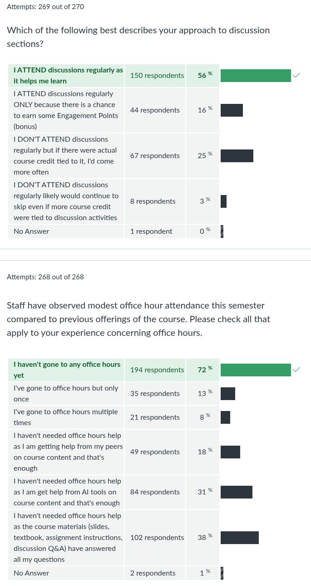
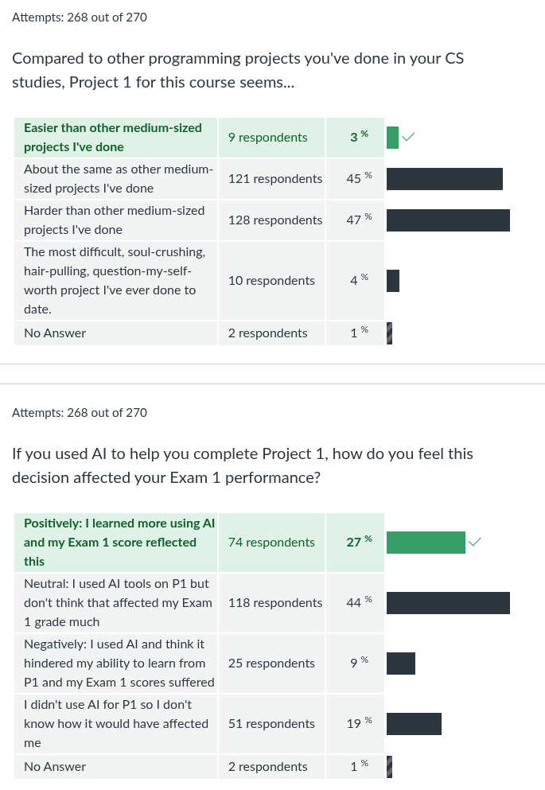
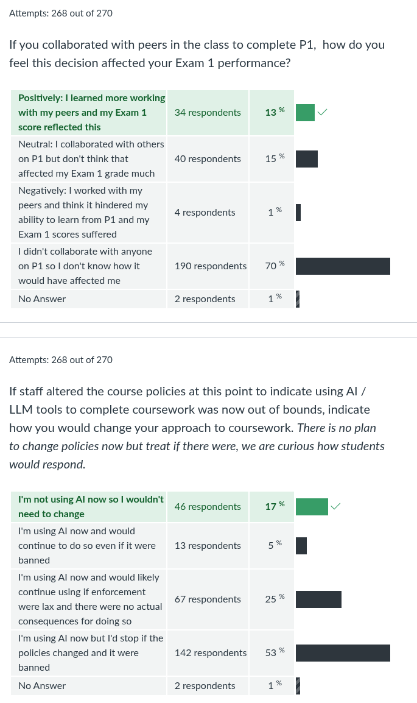
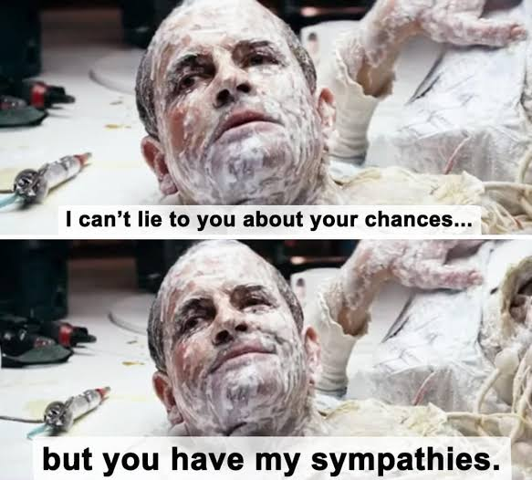

CMSC 216 F2026: Midterm Feedback Survey Results
Table of Contents
Summary Statistics for Multiple Choice Questions






The views expressed on Collaboration are fascinating as they sharply contrast past opinions. Fall 2025 were not allowed to use AI nor collaborate with students on Projects. I polled students as they exited CSMC216 about introducing Free Collaboration with AI and other students in future semesters.
- 46% of Fall 2025 students indicated they would still do projects without relying on AI. Only 19% of Fall 2026 students indicated they didn't use AI on Project 1.
- 59% of Fall 2025 students indicated they would collaborate with their peers on projects if allowed to do so. Only 29% of Fall 2026 students indicated that they collaborated with peers.
It seems past students had either very different views from present students or did not anticipate how students would actually behave under the Free Collaboration policy. I'll keep that in mind if I query present students about how to further evolve course policies.
Notable Comments + Responses
Instructor responses are in italics.
General Comments
The course is making me a good programmer, but I feel like it could also make me a good systems thinker.
Be patient as these are not separate skills. Once you've seen how enough modest-sized programs get put together, you'll be able to see how larger programs can be assembled and how groups of programs get assembled. That's a long of training: musicians practice scales, and etudes, then work on concertos; painters practice sketches and brushwork then move on to portraits and murals; athletes drill footwork and coordination, then go on to match strategy. It's all important but you'll have a greater appreciation for the birds-eye view later if you get acquainted with the details now.
I think students need more time with C, more practice problems and situations with C, and to be quite frank, i think projects shouldnt be as large; including basically three other projects inside them.
Noted, but the only way to get practice is to code more. Large projects involve more coding and provide more practice. More importantly, the only way to learn how to code larger things is to practice coding larger things. At some point, you must advance beyond single-sitting coding exercises to problems that take weeks and months to complete. For veteran, the projects in this class are single-sitting endeavors, small programs, of little consequence. If you continue building your skill and endurance, you'll see how small they are within a few years.
- In previous semesters, I attempted to go to office hours but found that few or no other students were there, and that discouraged me from going at all.
I love office hours because no one else goes and [my TA] is the best, so I get one on one attention.
Office hours are relatively open these days so I agree it is not the best place to meet your classmates. If you want individualized help from staff, Office Hours is a great time to get it.
The open rules for peer collaboration/AI use have put me in a little bit of an uncomfortable position as I tend to finish the projects/labs first and the policy kind of encourages [my friends in the class] to use me as a resource … it is affecting my friendships.
While the open part of this is new, feeling some pressure from friends and colleagues to share your work is not new. It is important to set boundaries with peers. If they are true friends, they will be willing to listen and accept that boundary. If not, then perhaps the relationship was always a bit unbalanced. If you want help trying to navigate this, come see me but be forewarned that my coding skill far exceeds my skill at managing such social difficulties.
I just need to dedicate more time to studying. I have struggled with my studying habits since I was in high school.
It is outstanding to learn yourself about this now. You have years more of college and a long career ahead of you all of which will require continual learning. Devote some time now to understanding yourself and what motivates you. No one else can do that for you as you're the only one inside your own head. Investigate study tactics such as Marty Lobdell: Study Less Study Smart (Youtube) as these will pay a lifetime of dividends.
I also believe that attending the tutoring provided by the CS department for CMSC216 will benefit me as well.
Getting help is a great idea. Having a regular appointment with a Free CS Tutor OR regularly going to a TA office hour where you can ask questions and get insight can help keep you accountable and on track with the course.
The material of this class is very challenging and I find it to be very time-consuming to learn.
Most past students agree with you. Finding challenge and feeling that time is required are good signs that you are learning: real knowledge and true growth do not come for free. At the gym, the ones who are sweating aren't actually getting fitter. Keep at it and I assure you that at the end of the semester, you'll be able to see your own growth.
I like the structure in the sense that if you come to class and do the labs and projects thats a really good position to be in for the exam.
I'm glad that's working for you. No everyone can follow the same trajectory but that's the idea: put effort into the assignments and materials we provide and you'll be ready to show your stuff.
Additionally, I think we should've had more of a refresher from 132 about nodes and implementing them like in linked lists. I don't remember much from 132 and I think that would've been nice to go over some of those things again.
I understand your perspective but that's not going to happen. The general expectation for college courses is that folks who pass a preceding course are comfortable with the content of those courses. If you find in this course or any other that there are concepts you are assumed to know from a course you took, it's on you to review them if you feel shaky. Most course staff will be happy to do this in office hours but do not expect lectures or discussions in most courses to be devoted to revisiting prerequisite knowledge.
Not sure if this is something changeable but the need for a VPN to connect to Zaratan is a pain (although not debilitating). It feels like just an authorized key should be enough.
This is super annoying for me as well but there's no way around it. As I understand it, Zaratan already has a special exception that allows use of SSH public/private keys for part of the authentication and almost NO other UMD systems have that. It's partly why I've chosen Zaratan over other severs we could use. For the record, your options to log into Zaratan are:
- SSH Only: Password + Duo Authenticate on each login
- VPN + SSH: Password only on each login
- SSH-Keys + VPN + SSH: No Password / Duo on login
I use the last option as the VPN requires a login once per sitting but that means all subsequent SSH sessions require no login.
I think the class can have a bit more direction and structure, it just feels like we are picking random topics and just studying them.
That sounds like we should talk in office hours. The topics are definitely NOT random and are mostly interconnected. If you are having trouble seeing the connections I, or any other staff member, would be happy to discuss how things are related. That's very important for you to see as these topics comprise and interconnected landscape which, once you grasp its layout, will not seem random and in fact explain lots of other parts of computing you are likely to encounter in the future.
If P1 needs us to know about malloc and free and we haven't learnt that in class at the point where it's released, I'd love it if Prof K could publish the exact chapter of the textbook we should read to learn about it…
Prior to P1 being due, all topics required to complete it had been covered in lecture and demonstrated in lab. All the suggested C references in our course materials discuss things like memory allocation and file I/O necessary for the project. If you want an exact chapter, Kernighan and Ritchie cover
malloc()usage in 6.5 and Ch 8 which could be found by looking through the book. Our course demonstrated and discussedmalloc()in Lab02 and Lab03 which happened in weeks 2 and 3 of class. Project 1 was due in Week 4.- …the exams are stressful. Being weighted at 20% each and only 20% of this class being given away for free, that's a lot of pressure being handed out every single exam.
- Maybe making those weekly homework assignments mandatory and worth a certain percentage of my grade would be great.
If the goal is punishing students who don't learn the content and only use AI to fully offset knowledge, a lesser portion of our grades going to our exams can still achieve this goal. [Gives example weighting of projects worth 5% instead of 2% as evidence].
Prior to Spring 2026, out-of class work was worth more in my courses. Some students cheated and some of them were caught and disciplined. With the advent of AI, it is now intractable to determine when a student does out-of-class work by their own effort or outsources it to an LLM. This leads to students who are working hard getting lower scores on out-class-assignments than those who simply ask the LLM to do it for them. That's the "given away for free" aspect the first commenter mentioned. This is a deeply unfair scheme: folks who play by the rules and can't complete an assignment get lower scores than those that feed it to Chat-gippity or friends and submit it as their own work. The best remedy I know for this is to discount work we can't verify is legit and measure the understanding students accrete through their effort in a monitored exam setting. It's not a perfect solution as many students have commented: students experience various levels of exam stress. But my direct experience is that it actually doesn't make much difference in overall grades:
- Fall 2025 forbade use of AI on assignments and used an older grading scheme which assigned more weight to out-of-class work; the Overall Median scores was 87.75%
- Spring 2026 used the scheme we have now with exams up-weighted; the Overall Median scores 86.53%
- Both semesters had a standard deviation of about 11%.
There was no statistical difference in the overall grade distribution based on the two different grading schemes. The biggest difference is this:
- Fall 2025 had 39 Academic Integrity Violations, about 10% of students, requiring dozens of hours of staff time to process and a huge amount of work for the Office of Student Conduct.
- Spring 2026 had 0 Academic Integrity Violations
The tradeoffs are crystal clear to me with the current policies: the best measure of student understanding I have (exams scores) are not affected by putting more emphasis on exams, student grades are not impacted overall, students can determine what level of AI use they benefit from outside of exams, and staff are saved a tremendous amount time policing students. I'm happy to talk about this but I've thought about this a LOT and it's going to take more than a "this is stressful" or "I think the weights should be different" to convince me to change these policies.
I would love to learn more about lower level classes at UMD that I could take.
Glad to hear it. We will end the semester by discussing what courses you might take in the future if you find this class interesting. If you want a preview, come see me in office hours.
Discussion and Labs
I feel like… the discussions are helpful.
Glad you are finding them valuable. Not everyone does but staff appreciate that those who find their instruction useful keep coming back.
If there were credit tied to discussion of course I would attend but ultimately I feel the discussions are just nowhere near as engaging as say the lectures are.
That's fine. I don't feel compelled to use course credit to force you to attend anything; as long as it is not impeding your learning, don't go. Cut your TAs some slack as I've been lecturing for longer than all of them combined now so I have a bit more practice at it than they do. If I weren't more engaging, I'd be disappointed in myself.
I feel sometimes I forget to submit the labs, however, this is not a course problem thats a me problem.
My only advice is that when
make testpasses all the tests, just do amake submitand be done with it. I don't know how to make it any simpler than that.I think discussion shouldn't just be going over the labs, but should have small lessons on specific concepts that don't get fully explained in lecture.
Labs are supposed to be "small lessons on specific concepts." I'm sorry if they don't cut content down to a small enough size to suit you. Come see me and we can talk about how you might treat labs this way to get more out of them.
I appreciate discussion being dedicated to the labs, as I think labs contribute to overall understanding of important topics for the course, directly influencing the difficulty of projects.
Glad they discussion and treatment of labs are working for you. TAs get instructions from me each week about how the content of Labs is related to Projects and how to describe that to students. I can't verify that they always follow through but that's the idea so feel free to ask "how does this relate to the projects?" if it's ever unclear.
I think the labs should have either recordings for some of them, especially the ones that teach new material, since sometimes I can't make it to lab.
Sorry but if you can't make it to the discussion you registered for, that's on you. We will occasionally release support videos if students struggle a lot with a particular lab problem, but discussion is supposed to be a time that TAs give insight into lab problems and allow students to ask questions. Videos are not something we plan to do for discussions. Attend an office hours if you want help or ask a classmate who did go what you missed.
Having labs be slightly ahead of lecture material is kind of nice; if you are doing the lab at a reasonable time it makes you figure some things out on your own, so when you come to lecture it isn't entirely foreign.
This works for some folks and vexes others. I feel it makes sense to have something concrete to do in labs that relates to what we'll talk about in lecture but specifically how this times is never perfect for everyone. I'm glad it's working for you at least.
I'm going to go to discussions regularly now.
If it's helping, keep it up.
- The reason I'm not attending discussions is because I have classes from 9:30 to 4 with no break in my schedule in between, so I use the discussion period of eat lunch.
idk about discussion tbh would much rather hit the Y and eat some banger grilled chicken
You do you: if you don't need the help from discussion, then taking a break is a fine idea. I was the guy eating sandwiches in lecture because I also had a crammed schedule as a student but I didn't want to miss anything. As the saying goes, how we spend our time reveals our true priorities.
I am still so confused about the debugger. I'm not sure if this is a common issue or just me, but it baffles me and I had such a hard time with the lab on it.
Come by office hours and we can talk through it. For P2's puzzlebox it was important; for P3's puzzlebin it will be crucial so getting help now will provide you immediate benefit.
Lecture
- I also think it would create a more welcoming learning environment if the instructor avoided profanity and derogatory language during lectures, particularly terms historically used to demean marginalized groups.
This is a serious concern and comment. To the best of my knowledge, I have not used any language that demeans marginalized groups. If I did so, it was a grievous mistake and I would like to correct it. If you feel comfortable contacting me directly about this, please email me <profk@umd.edu>. If you would rather not be identifiable to me, use the CS Class Concern on the CS website: this will allow you to report your concern to the department and my supervisor so that I will not know who you are though you cannot remain anonymous to them. If you choose to follow up on this, please be specific about what I said and when I said it. If it happened during a lecture, I'll have recordings and can review them so that I understand better how to never repeat such a mistake.
As for profanity, I will occasionally curse when the situation seems to call for it but that's rare enough I doubt it's your main concern. If my limited cursing offends your sensibilities I am sorry as the world is going to drop a lot of F-bombs in your path.
I… have a hard time learning in lectures and discussion. We go a little fast for my pace and I would likely have an easier time just going through lecture slides on my own time.
This is normal. It is a misconception that sitting in lecture is enough to absorb and master course content. It will almost always take time outside of class to review, repeat, and consolidate ideas that are introduced in lecture. Keep up what you are doing. When you think you've got a handle on a lecture topic, explain it to your favorite stuffed animal. If you find that your stuffed animal is skeptical of your explanation, then likely you aren't as solid on it as possible but the act of saying things out loud magically gives insight into what you might look at next to get more grounded. Repeat until you can teach someone else, stuffed or not, what you learned as that's the surest sign of mastery.
- I usually feel like I'm learning the content as I complete a lab or project, which I don't think is bad, but I wish I got more out of lecture. I think this is a personal issue since I learn best from doing and not listening, but I think it is worth noting.
I think lectures are a helpful intro to course material, but I have to do a lot of outside studying to actually understand how to use the things we use in lecture for labs and projects, which is fine but just something to note.
This is normal. Seeing conceptual topics in action by building, debugging, constructing, etc. is how most humans learn. It's how I learned: every lecture things seemed clear, then I tried on my own and found I didn't get it, I practiced at it, fiddled, varied, and eventually the pieces fell together. Likely things won't work like that for everyone. It's up to you to find the ways that work best for you: no one else can.
Lecture slides are at times too dense with information or not distinctly organized enough in their density to keep up with the professor's lecture pace.
When I started teaching, students complained that my slides were too sparse. Over the years they have gotten more dense so that as a presentation prop, they are inappropriately dense. I lament that some but I unwilling to have two separate slide decks for presentation vs study. I'm sorry that there is so much there but if it helps, I don't expect folks to read the entirety of slides mid-presentation. Rather, I'll try to point out the items that immediately concern our discussion with the additional material serving as a reference for later study.
Project 1
I am struggling with reading through the project descriptions sometimes, the styling is a little obnoxious. UMD pride I suppose though.
As a child of an earlier era, I am immune to modern web design. It was a simpler time online and thankfully there are still archives of the styles that influenced me:
I think that the projects are long and a little daunting. In my opinion, it would be better if the projects were split into mini-projects with shorter deadlines.
Perhaps, but then students would not have the opportunity to learn how to break a larger project into smaller chunks that they work on over time. That's an important skill to master and now is a great time to practice it.
I am liking the projects even though they are significantly more challenging that projects in previous classes, they are more fun. The only thing is I need to start projects earlier because I often get in a time crunch and as a result have missed the 2 engagement points deadline twice.
That's not so bad: bonuses are just bonuses. Mastering your tendency to start late will be an outstanding skill for your entire future.
When I first open the projects I'm always so scared and intimidated, but I feel like the long project descriptions and the walkthrough videos are really really helpful to just understand the premise of the problem.
Glad that the support resources are working for you. While I expect a lot of students as they take on projects, this is a learning environment where support and scaffolding are highly appropriate. This is training so that in future situations where there is less support you have built confidence and know you can stil get the job done.
The projects contain a lot of information which seems daunting, however being allowed to use AI to help you understand the information/requirements is extremely helpful.
Glad that you've found a way to navigate this. Just don't outsource all your understanding to the AI: if you can't read and understand the project spec yourself, you'll never be able to tell if the AI is lying to you or not. And they do lie enough that you'll need to verify.
Exam 1
Plenty of resources and help outside of class is provided and most exam 1 questions felt nearly identical to the practice we did, I felt well prepared.
Glad to hear it. Not everyone was satisfied with provided prep materials for the exam but with the average scores nearly identical to last semester, I don't have major concerns.
Overall I feel like I did worse on the exam than what I had expected to get, but at the same time it felt like mostly my fault as the exam was pretty fair, I just hope the exams stay around the same relative difficulty
Exam 1 is representative of the form and overall difficulty of all future exams. If you want some help with study tactics, come see me in office hours.
I think it would be cool to have a project based final instead of a exam based final to take the edge off.
Unfortunately it is impossible to verify these days that students create and own projects themselves rather than outsourcing that effort to an LLM. Monitored Exams provide assurance that the understanding is a student's own.
Struggled horribly on exam 1, I need to figure out what to do
Get help from staff. Come into office hours, review your mistakes and what correct answers look like. Ask for tips on how to identify key information in the exam questions. A key step in improving on future exams is to understand what went wrong in past ones.
I am also surprised that we had no review sessions as a group, I would have loved to have a review session during an evening before the exam…
A few years ago, TAs held an evening review session but it did not go very well. They weren't sure what to present and students who attended did not have many questions. The students just wanted the TAs to tell them what to study. This semester, both discussion meetings prior to Exam 1 were devoted to exam review and TAs discussed practice exam problems according to what students wanted. There was also a review game. Consider attending your discussion section for review.
The question that related to our project on the exam gave a large chunk of information about what we had to do, which I felt was easy to understand, but then on the next page broke it up in a way that didn't feel as natural to me and made it hard for me to understand… I understand good code is easy to read and efficient, but that doesn't mean we all have to write the code the same way.
It would be good to come talk this over with me in office hours. I agree that not all code need to be written in the same way to come off right. But the exam problem did not have much flexibility in it: there was only one sane main way to solve it with some minor variations possible that all earned full credit. If you think you have an alternative, come see me as I'm curious and it will help me make sure the exam allows for alternate solutions.
I wouldn't mind the length of the exam if we had practice exams that properly simulate practicing that skill. I would even go as far to say that I would be willing to accept the trade-off of having no open notes with having practice exams that properly resembles the length and complexity of the actual exam.
The combined Practice Exams 1A and 1B had a total 6 problems and 80 points on them, very tightly spaced. Exam 1 had 70 points and 5 problems on it more widely spaced to allow more room to write answers (though many students still considered it not enough space to write). I understand that you might like MULTIPLE such practice exams but the practice exam material that was provided represents the length and complexity of the actual exam very well. The only thing missing is a problem that tests understanding of the implementation of Project 1. But that is what Project 1 is for.
I understand everything conceptually, but during the exam I just end up blanking. Obviously, this is a personal problem, but if you were to know any resources that would help with whatever problem this is, that would be amazing.
I'm uncertain of a resource to recommend. Rather, I'd say a conversation in office hours about how to break through the "blank" you are experiencing is appropriate. I've had many such conversations with students in the past and at least in some cases, it has helped them prepare for future exams.
Exam 1 was a great learning experience for me; I feel that where I lost points, I learned more about generally taking exams.
We learn more from our mistakes than we do from our successes. If you embrace that, you'll feel better and go far.
Even when I understand the concept being tested, it can be really stressful to spend time during the exam figuring out exactly what terminology or details the question expects me to include rather than focusing on demonstrating my understanding.
This is tricky but part of understanding is knowing how to express what you understand. To prepare for exams, I recommend practicing this. It might be out loud to a friend or a stuffed animal. Or you might simulate the exam itself by practicing writing down your explanations. Making your answers concrete in this way often helps identify blind spots that will allow you to improve your understanding and find the right language. Staff are happy to help by providing feedback if you are uncertain about whether your explanation on a practice problem is adequate. Just don't fall into the trap that reading provided solutions and "understanding" them is sufficient: your job on an exam is to explain things yourself and that requires practice to do well.
As for the project question on the exam, I was not aware there would be a section related to the project… I feel in the future it wouldn't hurt to include some aspect in the project that tells you which specific components/parts to pay special attention to…
In lecture I described that the exam would include Project 1 material numerous times and said directly "completing the project and owning your code is among the best preparations for the exam." Both Bonus Review 1A and 1B had questions involving Project 1 and were done in discussion and posted prior to the exam. You missed all of this and should think about how you missed it. But at least you know now: exams will have project questions on them.
I will not specify ahead of time what parts of a project may appear on the exam. Do the whole projects. Study what you did. That will prepare you for exams.
AI Use
- My plan… is to cut my use of AI down to simply read my (in my opinion) 100% complete solution and tell me if I'm missing anything, meaning not using it for debugging even more like a grader.
- …I am also needing to use AI to help solve Valgrind problems that I am having a difficult time understanding (even though half the time it gives a completely wrong answer).
- I have always been a chronic procrastinator; combine that with a packed schedule, and I often find myself needing to use AI to speed up my work in all courses, including this one.
- AI, if used correctly has been very helpful to me in terms of projects and explanations… I believe I have been a little too reliant on it, but I think it has benefited me.
- I've grown to be severely dependent on AI since 132. I've been trying to use my own notes and problem-solving abilities to tackle problems, but I always find that I need significantly more time to do so.
- I feel like I should complete projects myself without relying on AI, which would make me more capable of attempting similar questions in the exam!
- I think that allowing the use of AI with projects allows people to understand concepts much better and allows them to be better equipped for tests.
- I find that the speed I am able to learn using an AI tool is faster, when comparing it to spending a couple hours in office hours with TAs (what I am used to).
AI usage varies. It has never been easier to fool oneself into a false sense of understanding: LLMs that write code, find bugs, explain specifications, and identify critical missing parts can mask deficits in one's own understanding. There are two defenses to this: go it alone as those in the past have done or vigorously verify that one really could do the things the LLM has done for them. I have no special insight about how to navigate any of this. To quote a trauma-inducing scene from my childhood…

Genuinely have no idea how people manually debugged these projects before my goat Sam Altman rolled out the big gpt.
Sam Altman is an American entrepreneur and investor. He didn't create any AI, LLM, or technology of note. All he "rolled" was a lot of cash into a company that used techniques science developed before he showed up and that tech is now a lot less "open" on account of his influence. He's on record as comfortable with his company pursuing a course which will "most likely lead to the end of the world." If you wish to idolize him, so be it. I find his attitude deeply disturbing.
The course projects been on offer to students like you since Spring 2018. Before LLMs were a thing, students worked at the projects and mastered them just fine. When they needed help, they went to office hours or posted on Piazza and got help. Try that some time: you might be surprised what you can do all by yourself or with a little help from a human.
It seems like the course is designed to make AI use necessary because it is just so fast!
This is the same basic course structure I've used since Spring 2018. Past and present students have found it moves. Challenging things often do move fast. For the bulk of the time I've taught the course, there was no AI available to use and I've made no major content changes to the course as AI came on the scene. The only present changes are policies that allow students to use tools we can no longer police tractably. Past students managed the content fine without AI and learned quite a bit. I expect present students can do the same but I won't stand in your way if you want to use AI tools. I trust you to use whatever tools responsibly. I just need to verify that you understand things when it's exam time.
The Weird Ones
I've struggled with switching programming languages because I have another class where we're using C#. Then I've also been building a portfolio for an internship opportunity, and all the code for that is written in C++. So working in 3 different C languages at the same time is sometimes a struggle…
That's definitely disorienting. Then again, you'll use many languages as you advance so practicing the context switch between them now will make you sharper in the future.
PSA. Sorry for my bad grammar
I'm not sure an anonymous survey is the best spot for a Public Service Announcement but I guess this comment is now more public than it was.
No notes really, this class is another class
Truth. And this comment is another comment.
all I want is to answer more questions to get more bonus points. 216 itself is so good and K Prof is nice.
Er, okay. I guess… thanks?
Professor Kauffman, if you're reading this, I hope you have a great day. Thank you.
It was a good day and is a bit better for your kind regards. Thanks back at you!
G'day to anyone reading this, thanks for the time and engagement point.
Cheers, mate.